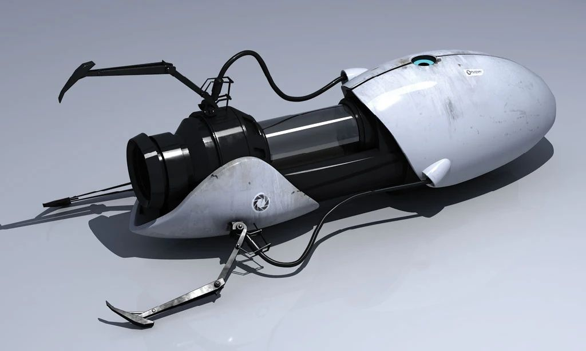
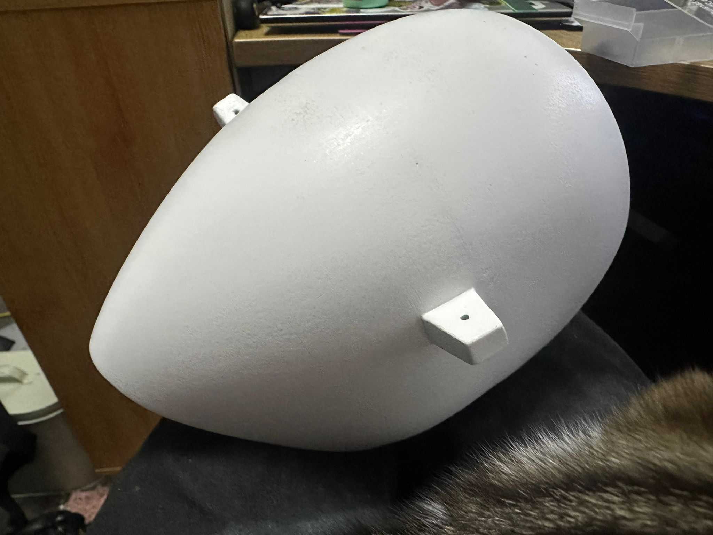

When life gives you lemons
A project I worked on a while back was creating a replica portal gun from the game Portal.

I printed it on my Ender 3 years ago and didn’t really put a lot of work into the post-processing. Recently I found out the shells to the gun were still intact, so I decided to rescue them and reprint the rest of the pieces on my new printer (the ones that broke while it was in storage).
First shell: seams, sanding, paint
I started by sanding the first piece and filling the seam with Milliput. I went from about 150 grit all the way up to 1500.
I’ve got a friend who professionally paints cars, so I asked him about painting it. He primed it and painted the first piece white for me, which came out really nice.
He said the best finish (since it isn’t entirely glossy) is:
- sand to a really high grit
- then clear coat it
So I’ve done the first pass at 150 to take off the high points, and now I’m going to work through the rest of the grits up to about 3000.

Next piece
The next piece is a lot bigger so it’s going to need a lot more filling and sanding to refine the shape and remove the layer lines.
One thing I’ve noticed: sanding paint is way easier than removing layer lines — the layer line sanding takes forever.
More updates soon once the next parts are reprinted and I’m further into the finishing.